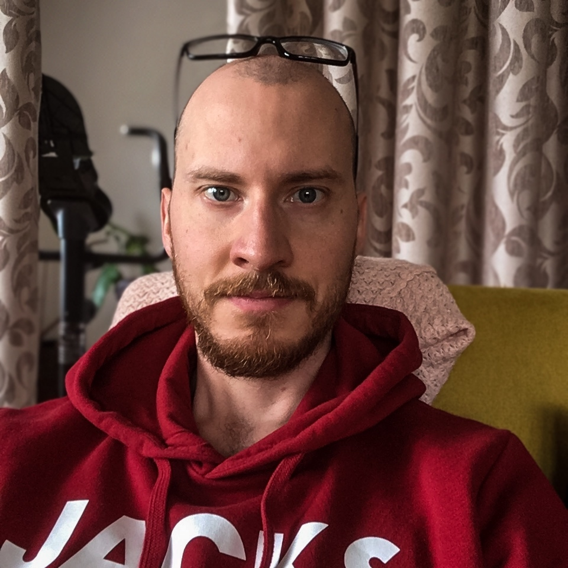

|  |
Benjamin FeleArchaeologist I am an archaeologist who is also a developed singer. I worked in a variety of fields and am able to learn new things quite quickly. My website: Matter into light |
| Dates | Position | Contractor | Work |
|---|---|---|---|
| 10/2019 - 12/2020 | Conservator |
Centre for preventive archaeology of Institute for the protection of cultural heritage of
Slovenia Rimska ulica 1, 1000 Ljubljana |
Photogrammetry, Modelling of sites in QGIS environment, Interpretation of LiDAR survey data, Making conservatory reports for historical analysis an LiDAR surveys |
| 06/2019 - 09/2019 | Archaeological excavator |
Group Stik Cesta Andreja Bitenca 68, 1000 Ljubljana |
Terrain photography, terrain measurements with geodetic total station, processing of measurements and graphic data. Creating a site archive and plotting the site in ACAD and QGIS. |
| AUTOCAD | ⭐⭐⭐⭐⭐ |
| QGIS | ⭐⭐⭐⭐⭐ |
| Python | ⭐⭐⭐ |